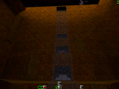
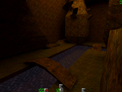
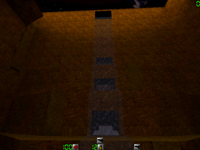
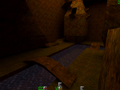
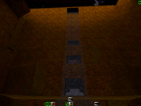
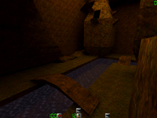

Map name: Deepcanyon
Map author: Shaymon
Map filename: deepcanyon.zip
Reviewed by: [KGB]_CANNABIS, Greenberet, IF-Teo, MrPaladin, Mercenary{AQM}, Droopy D, NerdBuster, Bryan

Review
Architecture Rating: 7 /10
Architecture Comments:
I think the layout and look of deep canyon is pretty good. I have seen better, but I have also seen worse. But I do feel it is two high and open. I feel it needs a little more cover. However I do like the little tunnels beside the waterfall.
Looks Rating: 8 /10
Looks Comments:
It does look good. The textures are smooth, and clean. The lighting is also good in this one. There are actually some shadows and bright spots. Its nice to see a jungle type map that uses shadows and better lighting effects.
Gameplay Rating: 5 /10
Gameplay Comments:
This is the part I don't like. This is another sniper map. Not all of us can be snipers, so not all of us can enjoy this map. I can not get into this map, I find it frustrating, as must other non-snipers. I also find to many people camping because it is so open and such an easy sniping map.
Ambiance Rating: 8 /10
Ambiance Comments:
I like this map because it brings out a jungle attitude out. You get a ruch seeing all the climbing you can do. Its lighting also adds to the exciting mood, it is so bright and vibrant in most areas. When you first pop into the map it takes your breath away.
Other Comments:
I like the waterfall, it is a great hiding place.
Conclusion:
This map has great possibility, although I actually feel it would make a better DM map. It is too open for TP as are the other jungle maps. It could be a great map, but it is not for everyone, it is for snipers.
Overall Rating: 7
Reviewed By: Bryan
Review
Architecture Comments:
Baically a right angle in a straight map. The water taking a perfect bend btohers me. All those 'camper friendly' places bother me. if it weren't so boxish i might like it more
Looks Rating: 3 /10
Looks Comments:
again. perfect 90 degree bends. the color is blah. brown and green. ick. water is blue, and it is a nice blue, but that is about it. brown is really bad, cause all those little camper friendly skins in DM (like cammo SAS) blend right in, makeing them even more annoying.
Gameplay Rating: 2 /10
Gameplay Comments:
ok, the campers ruined it. In DM and in teampaly the campers kill this map. i would have to say, that if their were no campers in the game, it might be fun, but we all know about lame campers.....
Ambiance Rating: 5 /10
Ambiance Comments:
well, this is were the map could have redeemed itself. if it looked like a canyon (slopes, natral bends) Maybe more conyon'ee sounds (like the waterfall flowing... maybe a happy bird or something... that would be cool, blowing someone away, and then the bird chirps hehe
Other Comments:
all in all... this map is a major let down. I felt it could have been much better, and while i myself am not a good mapper, i would think that for something to get released, it would have to be good. I was surely disapointed in this map, and am sure not to run it on any server i run.
Conclusion:
The author could have spent so much more time, and made it a less camper prone map. then, it may have rocked... but as is.. it would need a huge overhull.
Overall Rating: 3
Reviewed By: NerdBuster
Review
Architecture Rating: 5/10
Architecture Comments:
The architecture is made for snipers and campers, not a good thing. If you spot a camper up high then often times it's pretty hard to sneak up there and get him. The layout was also pretty bad, the whole map was a basic L shape with very little connectivity. A few caves made it slightly interesting, but they were often the homes of campers.
Looks Rating: 8/10
Looks Comments:
The map had a very good canyon feel. The textures were great, fitting the theme perfectly. The author could have included a better sky though. This space one doesnt quite fit.
Gameplay Rating: 7/10
Gameplay Comments:
A very fun map regardless of the layout. Me and my buds had a grand laugh playing "American Gladiators". We would stand on the bridge and try to kick each other off. heheh. The river added some extra excitement when I finally kicked someone off and they were lucky enough to land in the river. Also a very good plain all out deathmatch map, if you like to snipe and camp. If you can sit yer ass in a good spot with a sniper rifle and a good aim, your basically unbeatable.
Ambiance Rating: 7/10
Ambiance Comments:
The canyon had a very good feel. The stone textures are great. But I'd like to know what that glowing blue thing is in the cave. And the waterfall could have used more sound.
Other Comments:
Conclusion:
This map is ruined if you got any camperholics playing. But very fun if with alot of close combat, kicks really come in handy on the high parts of the map. And I think this map would be lots more fun with the mod Dirty because of the off the wall back flips and ledge grabs. But I havent had the privalege to try that yet.
Overall Rating: 7
Reviewed By: Droopy D
Review
Architecture Rating: 11/10
Architecture Comments:
Allright Bravo Bravo this is the most sound map.Architecvture superb.The only thing wrong i dont have textures for it so it looks all black and pink in spots.This map maker better make another one and call it snipers paradise.
Looks Rating: 10/10
Looks Comments:
Fantastick!!!!!!!!!!!!!
Gameplay Rating: 10/10
Gameplay Comments:
This is the best spot for snipers,campers,and those annyoing guys who run around with shotguns and always kill you.Theres all sorts of things to do in here you can go behind the waterfall and wait with a sniper rifle for that stupid camper.Or you can be that camper and hide in the water with the water rushing down to protect you from sight.Well the shotgun guysd this is long range for a shredder so pull out a mp5 or anthing that dont shred unless you can hit a guy a mile away.
Ambiance Rating: 10/10
Ambiance Comments:
I really felt like i was in a canyoun and i was takin out terrorists.
Other Comments:
Bless this man and all his maps.
Conclusion:
well as you probably guessed i really like this map.The best map out there so far besides the evr so good urbans and actcitys
Overall Rating: 10
Reviewed By: Mercenary{AQM}
Review
Architecture Rating: 5/10
Architecture Comments:
I was dissapointed.... Tho the concept of the map would suggest that there be many covert paths and sneeky snipering spots, I found it to be rather plain.... while the attempt was made to make the map flow... due to poor textures and unlife like rock formations the map is made rather plain.... at least you dont slide over the edge like on 'cliff'....
Looks Rating: 4/10
Looks Comments:
Basic.... the walls that are climbable are different color to the regular grass..... the firt is brown... the water is blue..... thats all I have to say about that......
Gameplay Rating: 4/10
Gameplay Comments:
The sniper spots are in the open..... the spots where you can get cover from are obvious... so if you do get to them I'll hunt you down and shoot you like a dog.....
Ambiance Rating: 8/10
Ambiance Comments:
This is the maps redeaming feature..... the concept..... PLZ Somebody, take the idea of this map and make if flow like a waterfall and be pretty as a spring blossom! The waterfall is tranquil...
Other Comments:
Conclusion:
maybe I was hopeing for too much..... but I like the idea of the canyon.... maybe if it was made into a figure 8 layout and made to look more natural, I could get into it.... if you just wanna battle in a green/brown alien landscape, then this is your map....
Overall Rating: 4
Reviewed By: MrPaladin
Review
Architecture Rating: 8/10
Architecture Comments:
I have only tried this in TP, don`t know how it`ll be in DM.
The layout is pretty nice,a deep canyon (doh!). This is a big map with a waterfall that runs in to a river. There is lots of places to climb, but since all these places are really high, you`ll die if you fall down(if you`re not lucky enough to splash down in the river).
The waterfall is nice, it`s a cave behind it that has three entrances. I usually go there to bandage, but lot`s of people also hide there while sniping, because there is a little harder to see people trough the water. I give the layout an 8 because it is too easy to fall down and die. and because( as another reviewer already said) the waterfall should make more sound.
Looks Rating: 4/10
Looks Comments:
All the textures on this map is either stone or grass. Nothing special, pretty boring actually. Another thing, is the canyon floating around in space?, lots of astroids on the sky( the sky from the last map in q2 ).It doesn`t fit the theme at all
Gameplay Rating: 6/10
Gameplay Comments:
This map is campers paradise, so therefore snipers are the winners on this map. The map is FULL of camping places,and I`m not a fan of campers. I use the sniper rifle or the mp5 when I play on this map. I have tried the shotgun and handcannon too, but since the map is so big, you`ll never reach the people on the other side of the canyon when using any of them.
Ambiance Rating: 8/10
Ambiance Comments:
Even though the textures are pretty boring, you get the feeling of running around in a canyon when playing it. lots of sounds everywhere you go. Owls, frogs, the bridge squeaks when walking on it, and helicopters? where?. The waterfall should be Roaring but it sounds like a small river instead.
Other Comments:
Conclusion:
I loved this map when a server I usually play on put it in rotation, but after playing it a few weeks it has gotten pretty boring. Specially when everybody is using the sniper rifle, finding themselves a nice camping place and sit there until everybody is dead. All sprayers hate this map(acording to what I have heard), so snipers, get the serverowners to put it in rotation :)
Overall Rating: 6
Reviewed By: IF-Teo
Review
Architecture Rating: 0/10
Architecture Comments:
IT sucks
Looks Rating: 0/10
Looks Comments:
It sucks
Gameplay Rating: 10/10
Gameplay Comments:
IT SUCKS
Ambiance Rating: 10/10
Ambiance Comments:
It ROCKS
Other Comments:
Hmmm...You guess....
Conclusion:
In conclusion, it SUCKS!
Overall Rating: 0
Reviewed By: Greenberet
Review
-5/19/99-
Architecture Rating: 9/10
Architecture Comments:
Big map. Long distances to cover for snipers benefit, with short corners and cliffhanger areas for close-in fighting excitement. Cool bridge with creaky noise, multi-level waterfall is pleasing to the eyes. A very 3 dimensional map, it has the nooks and crannies a sniper craves. I'd say Shaymon's favorite weapon is a sniper rifle, with all of the snipe holes there are. Not a shotgun map, unless you know how to dance like crazy. If you're thinking of using knives, then make sure everyone else is... it's a lot of fun.
The one negative thing about the layout is it's invitation for guys with camping tendencies to let it all hangout. There are plenty of places to pitch tents at, but at least all of them the I know of have at least two accesses to them.
Looks Rating: 7/10
Looks Comments:
It looks good. The textures are fairly varied, and make for good camouflage at range. The waterfall's really fun to climb or to try to pick targets out from within it's curtain. Not the way I'd envision a canyon lookin myself, but for a quake map it's a blast. I can't help but wonder what the blue square in that dark upper room is all about... remeniscent of monastery...
Gameplay Rating: 9/10
Gameplay Comments:
This map would get a 10 if it weren't for the massive amount of campsites. Unfortunately, as fun as it is for snipers, teamplay rounds can last forever if either the hunters are stupid, or the campers are clever. I can easily say rite now, this map is my favorite... Urban3 step down. It's great for teamplay, but for deathmatch where campin is required sometimes THIS MAP ROCKS! Gimme the sniper/silencer combo and one of the fine spots offered on this map... well I've seen guys get streaks of 10+ kills.
Ambiance Rating: 7/10
Ambiance Comments:
Good amount of sounds.. owls, creaking bridges, & helicopters. Where the hell is the copter anyway??? But where's the sound of the waterfall? It should be roaring... almost deafening... at least to drown out footsteps... for this reason alone, the score drops to a 7. Easily a 9 or 10 with waterfall sounds... please plug one in.. would even out the handicap gained when hiding in there. You're hard to see, but you can't hear didley! Haha
Other Comments:
Conclusion:
As I said, this map's my favorite to play right now... It's definitely a rifle map... bring your M4, MP5, or snipe cuz it's certainly no knife fight! ADMINS: set your server to this map with use of knives only... whoa!!!
Overall Rating: 9
Reviewed By: [KGB]_CANNABIS